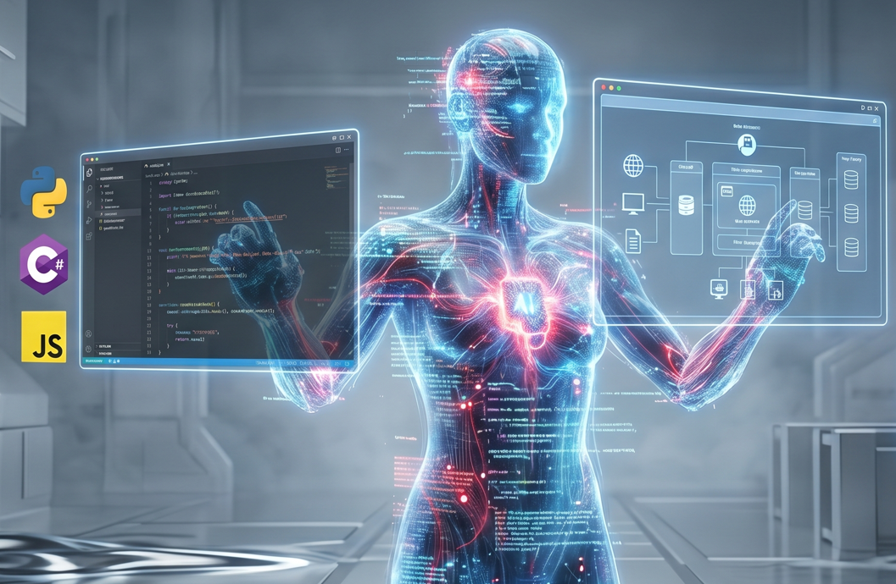
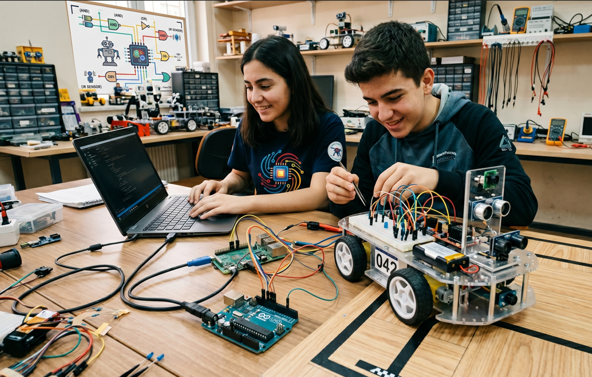
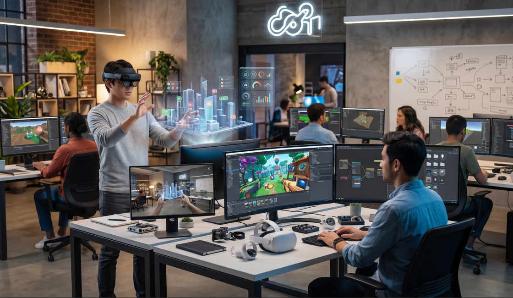
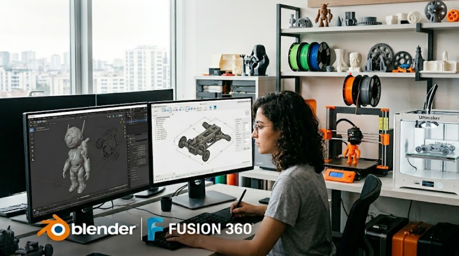
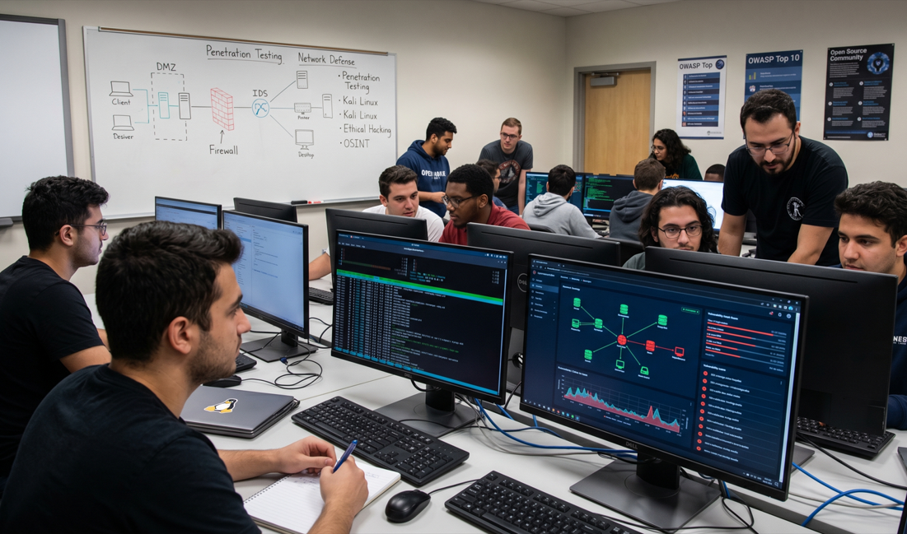
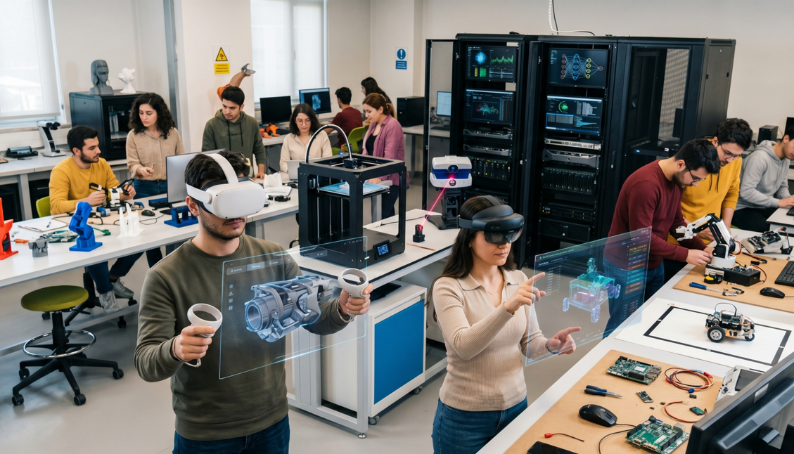

Bilişim ve Teknoloji Laboratuvarı
Üreten bir nesil yetiştiriyoruz. Yazılımdan robotik sistemlere, Linux altyapısından sanal gerçekliğe kadar en güncel teknolojileri keşfedin.

Yazılım & Yapay Zeka
Python, Java ve C# ile programlama temellerinden başlayarak, modern web projeleri ve yerel Yapay Zeka (AI) modelleri geliştiriyoruz.

Robotik & Mekatronik
Arduino ve Raspberry Pi ile elektronik devreler kuruyor, ulusal ve uluslararası yarışmalar için otonom sistemler ve yenilikçi robotik projeler tasarlıyoruz.

Oyun & XR (VR/AR)
Unity ve Unreal Engine ile etkileşimli dünyalar yaratın. Oculus 2 ve HoloLens 2 sistemleriyle sanal gerçeklik projeleri geliştirin.

3D Tasarım & Üretim
Blender ve Fusion 360 ile hayal ettiğiniz modelleri tasarlayın, 3D yazıcılarımızla fiziksel dünyaya aktarın.

Siber Güvenlik & Linux
Açık kaynak dünyasına adım atarak Linux işletim sistemlerinin yönetimini öğrenin, siber güvenlik laboratuvarımızda ağ savunma ve sızma testi tekniklerinde uzmanlaşın.
Yeni Nesil İnovasyon ve Teknoloji Üssü
Öğrencilerimiz, laboratuvarımızda kurulan endüstri standartlarındaki profesyonel donanımlarla gerçek dünya deneyimi kazanmaktadır.
- Oculus 2 ve HoloLens 2 Karma Gerçeklik Sistemleri
- 3D Yazıcı ve Yüksek Hassasiyetli Tarayıcı
- Linux Sunucular ve Yerel Yapay Zeka Test Laboratuvarı
- Robotik ve Gömülü Sistem Geliştirme Kitleri
